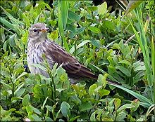
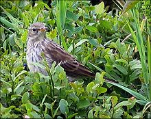

| Water Pipit | |
|---|---|
|  | |
| Conservation status | |
| Binomial name | |
| Anthus spinoletta (Linnaeus, 1758) |
| Water Pipit | |
|---|---|
|  | |
| Conservation status | |
| Binomial name | |
| Anthus spinoletta (Linnaeus, 1758) |
The Water Pipit, Anthus spinoletta, is a small passerine bird which breeds in the mountains of southern Europe and southern temperate Asia across to China. It is a short-distance migrant moving to wet open lowlands such as marshes and flooded fields in winter. Some birds migrate north to Britain for winter, taking advantage of the warm oceanic climate.
Like most other pipits, this is an undistinguished looking species on the ground, mainly brown above and dark streaked buff below. It has dark legs, white outer tail feathers and a longish dark bill. In summer it has a distinctive breeding plumage, with a pinkish breast, grey head and pale supercilium.[2][3]
The Rock Pipit's subspecies littoralis in summer plumage is very close in outward appearance to the Water Pipit however. They can be told apart by their song,[4] and occupy different habitat types even when they occur in the same general area.[5] The Water Pipit is also much less approachable than the Rock Pipit, rising high and quickly leaving the vicinity when approached. Water and Buff-bellied Pipit do not co-occur except in a small area in Central Asia.[6]
This species is insectivorous. Its call is an explosive "fit", like Rock Pipit. Its song is similar, but it consisting of maybe 5 "blocks" of just about half a dozen notes each (the Rock Pipit has fewer, but longer blocks); it ends either with no or with repeated trills.[5]
Formerly included in the Water Pipit were the subspecies now separated as Rock Pipit and Buff-bellied Pipit.[7] The former is more closely related to the Water Pipit than the latter, as indicated by external[2] and molecular characteristics.[8]

{kind=link}